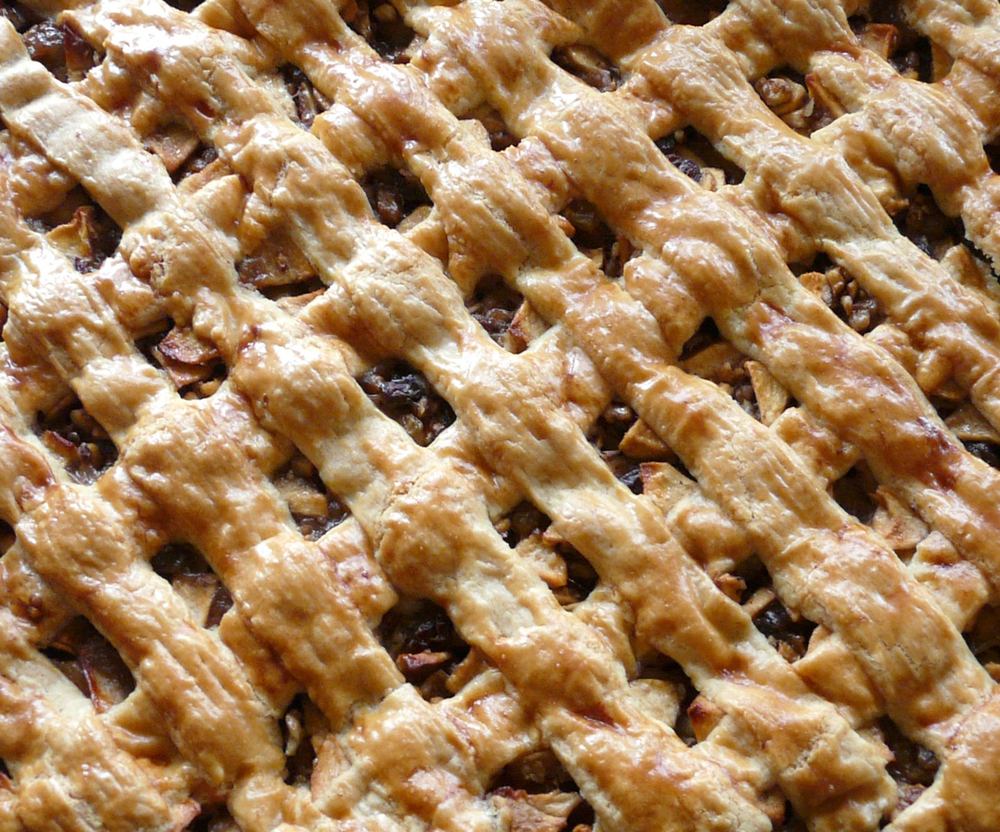

Apple Pie

Description
An apple pie is a pie in which the principal filling ingredient is apple, originated in England. It is often served with whipped cream, ice cream ("apple pie à la mode"), or cheddar cheese. It is generally double-crusted, with pastry both above and below the filling; the upper crust may be solid or latticed (woven of crosswise strips).
The bottom crust may be baked separately ("blind") to prevent it from getting soggy. Deep-dish apple pie often has a top crust only and tarte Tatin is baked with the crust on top, but served with it on the bottom. Apple pie is an unofficial symbol of the United States and one of its signature comfort foods.
Ingtedients
- 1 recipe pastry for a 9 inch double crust pie
- 1/2 cup unsalted butter
- 3 tablespoons all-purpose flour
- 1/4 cup water
- 1/2 cup white sugar
- 1/2 cup packed brown sugar
- 8 apples - peeled, cored and sliced
Steps
- Preheat oven to 220 degrees C.
- Melt the butter in a saucepan. Stir in flour to form a paste. Add water, white sugar and brown sugar, and bring to a boil. Reduce temperature and let simmer.
- Place the bottom crust in your pan. Fill with apples, mounded slightly. Cover with a lattice work crust. Gently pour the sugar and butter liquid over the crust.
- Bake 15 minutes. Reduce the temperature to 175 degrees C. Continue baking for 30 to 40 minutes, until apples are soft.
Back to main page